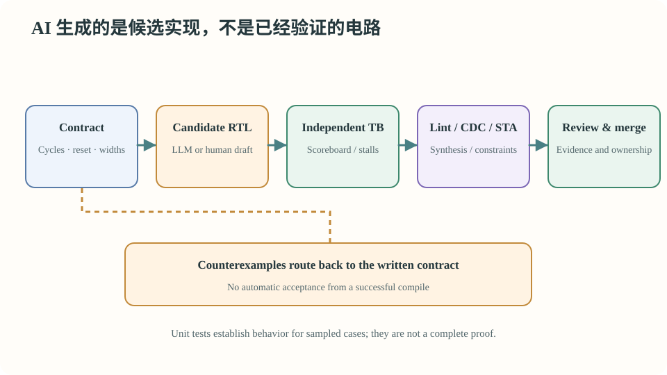

AI 辅助 FPGA 开发：从 RTL 候选到可验证硬件
不把 LLM 输出当作签核结果。用一个真正支持背压的 Ready/Valid 单级缓冲，建立规格、实现、独立测试和物理约束之间的可核验证据链。
01 / AI 在硬件开发中能做什么、不能证明什么
自然语言模型可以帮助把需求拆解成模块、起草 RTL、生成测试向量、解释波形和整理 EDA 日志；它不能仅凭“看起来合理”的代码证明周期级协议正确、不会丢包、CDC 安全、满足目标器件约束，或者在板卡上可靠运行。

硬件和普通脚本的关键不同是：一条非阻塞赋值发生在哪个时钟沿，组合路径会如何影响时序，握手时能否同时读写，复位后控制与数据是否一致，都直接影响物理电路。LLM 可能写出语法有效、仿真也能通过一两个简单样例，但在 ready=0 时覆盖未取走的数据，或在 FIFO full/empty 边界发生 off-by-one。
学术基准可以帮助比较方案，但不等于工程签核。例如 NVIDIA VerilogEval 使用来自 HDLBits 的问题评估 RTL 生成，RTLLM 2.0覆盖更多设计 RTL 类型。两者的任务分布、提示、评分测试集、工具版本和样例污染风险都不同；不能从某一次榜单得分推断某个 FPGA 工程的功能正确性或 Fmax。最近的综合闭环研究也把语法、功能、面积、延迟与警告分开评估。
02 / 比 Prompt 更重要的是“可执行规格”
把需求写成协议契约，通常比反复要求“写得更专业”更有效。以下是一个一深度（single-entry）的弹性寄存器（elastic register slice），用于在两端之间暂存一个 payload。它只有单时钟域、同步 active-low reset、16-bit 数据；输出无组合直通，保存的第一个数据至少在下一时钟周期可见。
| 条件 | 必须发生什么 | 必须不发生什么 |
|---|---|---|
| reset | 清空 valid | 输出虚假的有效事务 |
| 空 + 输入有效 | 时钟沿捕获 payload、full=1 | 丢弃输入 |
| 满 + 输出未 ready | 保持 valid 和 payload | 覆盖旧数据或重复出队 |
| 满 + 双端同拍握手 | 消费旧 payload 并装入新 payload | 产生空拍或双重消费 |
| 满 + 仅输出握手 | valid 变 0 | 继续声称旧数据有效 |

对于这个特定的结构，s_ready = !full || m_ready，m_valid = full。前者允许满缓冲区在旧数据被取走的同一拍接受新数据，而当消费者暂停时阻止上游进一步写入。接口端口和时序必须与声明保持一致；它不是多 entry FIFO，也不是异步 CDC FIFO。
03 / 给 AI 的任务应包含端口、周期、例外和验收条件
一个可复用的规格模板应包括：目标语言与方言、顶层模块和端口、位宽/有符号规则、时钟复位、握手语义、数据保持要求、是否允许组合 READY 路径、延迟和吞吐目标、覆盖场景、测试工具与版本。缺失的系统约束应列为待确认，而不是由生成器自己猜一个板卡或虚构引脚。
实现一个单时钟、16-bit、单 entry 的 ready/valid register slice。同步低有效复位清空输出 valid；输出 payload 必须寄存，输入到输出不允许组合数据直通。握手仅在 valid && ready 的时钟沿发生。输出 full 且 sink not ready 时，valid 和 payload 必须保持；同一拍 dequeue/enqueue 允许替换 payload。请同时给出独立 scoreboard 测试：复位、空满边界、连续传输、随机下游背压、最后 drain，以及明确未覆盖的 CDC/STA 问题。
这个任务没有要求 AI 臆造“100 MHz”“0 LUT”等实现数字。若项目确实给出了目标 part 和 clock period，仍需要合成与 P&R 报告才能检验。生成结果还应经过人工检查，例如识别锁存器、组合环、阻塞/非阻塞赋值误用、隐式 signed cast、端口打拍错位，以及将 CDC 同步器属性错误地使用在普通数据逻辑上。
04 / 一深度 Ready/Valid 模块：读懂完整状态转移

assign s_ready = ~full | m_ready;
assign m_valid = full;
assign m_data = payload;
always @(posedge clk) begin
if (!rst_n) begin
full <= 1'b0;
payload <= '0;
end else if (s_ready) begin
full <= s_valid;
if (s_valid) payload <= s_data;
end
end当 full=1、m_ready=0 时，s_ready=0；寄存器不更新，因此旧 payload 和 full 均保持。若 full=1、m_ready=1，输出握手成功，且在本拍若 s_valid=1，新 payload 同时写入；否则 full 变 0。若 full=0，输入端始终 ready，产生的第一个数据在该时钟沿存入寄存器，而不是组合直通到下游。
这个电路确实存在从 m_ready 到 s_ready 的组合依赖。单级使用时它很常见；若在一个大型链条中连续级联，会形成较长 READY 路径。若要求在大系统中完全打断 READY 组合路径，需要使用另一个架构（例如 skid buffer 或有容量裕量的全寄存流水），不能把这一版称为“所有信号都打拍”。
05 / 验收不是“生成更多测试”，而是建立独立记分牌
本仓库提供 ready_valid_slice.v 与 tb_ready_valid_slice.v。测试在一段固定种子的伪随机过程中交替产生有效输入和下游背压；参考 scoreboard 只在 s_valid && s_ready 的时钟沿把输入入队，只在 m_valid && m_ready 的时钟沿比对并出队。它额外检查上一拍处于 stalled 状态时输出 valid 和 payload 没变，以及 drain 后队列归零。
iverilog -g2012 -Wall -s tb_ready_valid_slice \
-o /tmp/elastic.vvp \
examples/rtl/ready_valid_slice.v \
examples/tb/tb_ready_valid_slice.v
vvp /tmp/elastic.vvp
# PASS ready_valid_slice (... ordered transfers)这个 testbench 不是完整形式验证：它只覆盖指定的 width、reset 和固定随机序列。将它用于生产前，还应加入参数化宽度测试、时钟/复位边界、协议属性（如无丢失、无重复、单调顺序）、cover property、需要时的等价检查，以及真正工具实现后的 STA。
对于更复杂模块，推荐把检查拆成分层证据：语法/lint、独立 reference simulation、协议断言与 CDC、逻辑综合/资源和 P&R 的物理时序。Yosys · Symbolic model checking 提供形式验证机制；使用 SBY/EQY 时也需要正确指定被证明的性质和环境假设。
06 / 从“代码生成正确率”到工程签核的证据分层

解释一个模型的 VerilogEval/RTLLM 结果时，至少要记录模型与生成参数、数据集版本、题型、prompt、采样次数、通过条件、模拟器/综合工具版本和是否使用外部反馈。只比较“通过率”没有可比基础。尤其要防止同一个 AI 同时编写 RTL 与唯一测试，然后两者共享相同误解，产生自洽但错误的系统。
工程化的协作流程可以让 AI 执行受控的小任务：补充 corner-case checklist、解释工具 warning、对照规范找遗漏、生成自测脚手架。最终验收应当由硬件所有者审批：具体设备、RTL diff、独立 golden、coverage、CDC/SDC、工具版本和真实测量。AI 不能替代硬件安全、时钟、电源和数据保护审核。
此外，向第三方工具发送私有 RTL、客户规格、IP 配置、密钥或完整的内部时序报告前应先确认数据政策、授权和许可边界。NIST AI Risk Management Framework 及其 Generative AI Profile 强调把治理、测量与风险管理纳入部署过程，而不是把输出视为可信前提。
自测：一个 AI 生成的 FIFO 通过 1000 次随机仿真，是否能宣布不会丢包？
不能。固定随机序列只覆盖有限轨迹；仍可能遗漏特定满/空同时握手、复位竞争、跨域事件或参数宽度。要根据协议定义独立 scoreboard、断言、覆盖目标与环境假设，并在实际资源/时序环境里验证。
研究证据、标准与工程参考
- NVIDIA Research · VerilogEval benchmark
- NVlabs · VerilogEval code and benchmark harness
- RTLLM 2.0 benchmark source
- Synthesis-in-the-Loop Evaluation of LLMs for RTL Generation (2026)
- Arm · AMBA AXI valid/ready stable-payload requirement
- Yosys documentation · Formal model checking
- NIST · AI Risk Management Framework